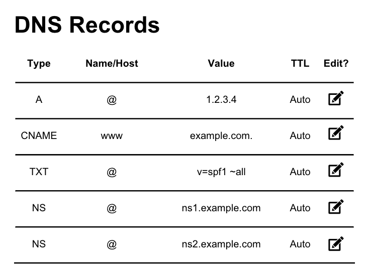

Blog Educativo: DNS (Domain Name System)
Inicio
Historia
Funcionamiento
Registros DNS
Problemas y Soluciones
Sobre la tarea
Tipos de Registros DNS
A:
Asocia un dominio con una dirección IPv4.
AAAA:
Asocia un dominio con una dirección IPv6.
CNAME:
Alias de otro dominio.
MX:
Servidores de correo.
TXT:
Información adicional.
